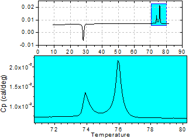
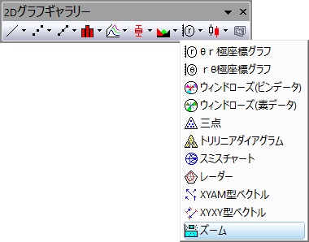

ズームグラフ
Zoom-Graph
- 
要求されるデータ
少なくとも1つのY列、あるいは、その部分領域を選択する必要があります。関連付けられたX列がある場合はそれを使用し、そうでない場合は、Y列または行番号のサンプリング間隔が使用されます。
グラフ作成
データを選択します。
メニューから を選択します。
または、
2Dグラフギャラリーツールバーのズームボタンをクリックします。
- 
テンプレート
Zoom1.OTP (Originのプログラムフォルダにインストールされています。)
ノート
ズーム化グラフは折れ線グラフとして、ふたつのレイヤの中に各データセットが含まれています。コンテクストセンシティブメニューや 作図の詳細ダイアログからの指定で、散布図、線+シンボル、縦/横棒グラフに変更できます。
グラフの上のレイヤには裏で動作するプログラム(スクリプト)で定義された長方形の枠があり、その枠をマウスで移動すると、下部のレイヤにその枠内のプロットが自動的に表示されます。また、その枠の大きさを変更すると､表示する領域を狭めたり広げることができます。
 | 軸スケールの拡大ボタン を使用して2Dグラフの拡大部分を新しいウィンドウにコピーできます。複数のレイヤが重なっており、かつ軸を共有している リンクされたレイヤのグラフの場合にも、この機能は有効です（作図の詳細-レイヤ属性：レイヤの大きさタブにてリンクされたレイヤの%が左/上は0に、幅/高さは100に、さらに親レイヤ座標軸へのリンクは直接(1対1)となっていること）。 を使用して2Dグラフの拡大部分を新しいウィンドウにコピーできます。複数のレイヤが重なっており、かつ軸を共有している リンクされたレイヤのグラフの場合にも、この機能は有効です（作図の詳細-レイヤ属性：レイヤの大きさタブにてリンクされたレイヤの%が左/上は0に、幅/高さは100に、さらに親レイヤ座標軸へのリンクは直接(1対1)となっていること）。
グラフをアクティブにして、Ctrlキーを押して軸スケールの拡大ボタンをクリックし、2Dグラフ上の矩形をドラッグします。この拡大グラフはダイナミックなものです。元のグラフの矩形を移動、サイズ変更すると拡大グラフも更新されます。拡大グラフのスケール範囲（X/Y軸）を変更する場合は、元のグラフ上の矩形を右クリックし、寸法の更新を選択して同じスケール範囲をカバーするようにその形状を更新します。グラフの ズーム、拡大、スケール についての詳細は、こちらのページをご覧ください。
|